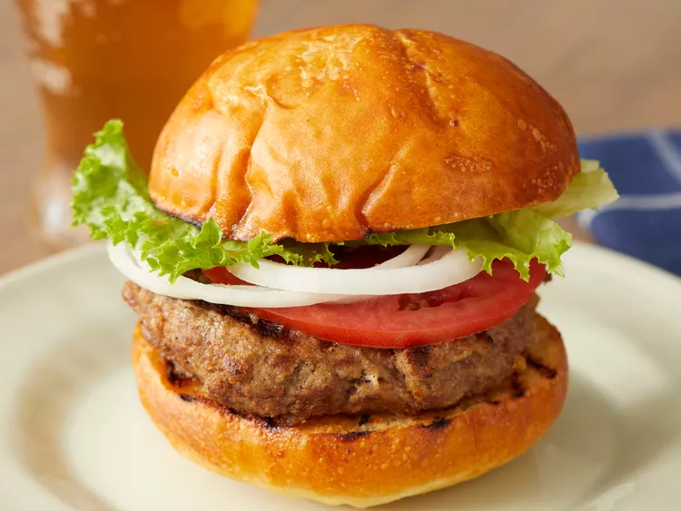

These burger patties are made with ground beef and an easy bread crumb mixture.
Nothing beats a simple hamburger on a warm summer evening. Pile these burgers with your favorite condiments and pop open a cool drink!
- 1 large egg
- ½ teaspoon salt
- ½ teaspoon ground black pepper
- 1 pound ground beef
- ½ cup fine dry bread crumbs
-
Preheat an outdoor grill for high heat and lightly oil grate.
-
Whisk together egg, salt, and pepper in a medium bowl.
-
Add ground beef and bread crumbs and mix with your hands or a fork until well blended.
-
Form into four 3/4-inch-thick patties.
-
Place patties on the preheated grill. Cover and cook 6 to 8 minutes per side, or to
desired doneness. An instant-read thermometer inserted into the center should
read at least 160 degrees F (70 degrees C).
-
Serve hot and enjoy!